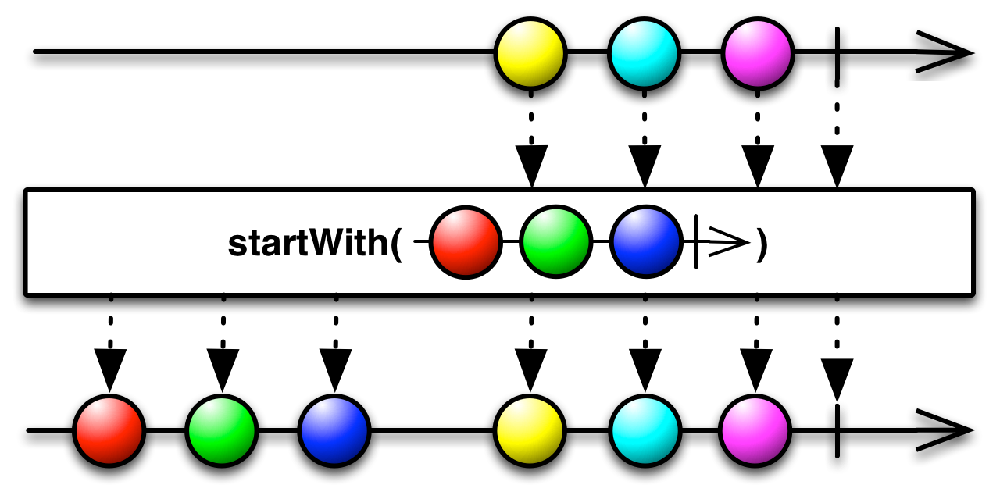

在数据序列的开头插入一条指定的项
如果你想要一个Observable在发射数据之前先发射一个指定的数据序列，可以使用StartWith操作符。（如果你想一个Observable发射的数据末尾追加一个数据序列可以使用Concat操作符。）

可接受一个Iterable或者多个Observable作为函数的参数。

你也可以传递一个Observable给startWith，它会将那个Observable的发射物插在原始Observable发射的数据序列之前，然后把这个当做自己的发射物集合。这可以看作是Concat的反转。